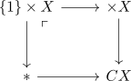

nullhomotopic map and extension from the cone
Proposition
Let $X,Y$ be topological spaces. Then there exists a bijection between
- maps $f: CX \rightarrow Y$ out of the cone
- maps $f: X \rightarrow Y$ together with a nullhomotopy
Proof
Note that the map is uniqely determined by the nullhomotopy.
Then this follows from the universal property of the

where the nullhomotopy ensures that $\{1\} \times X$ is constant